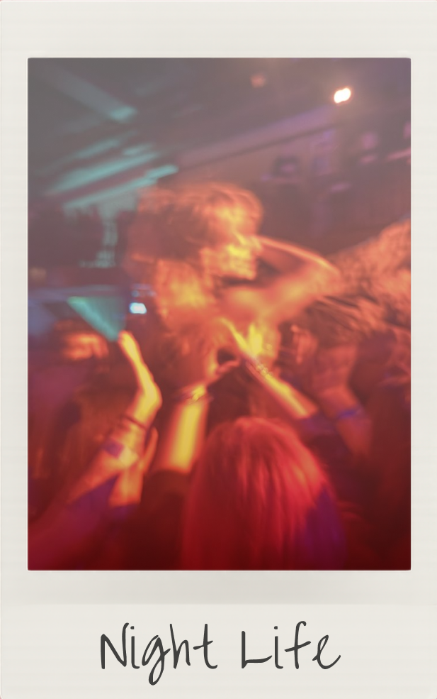
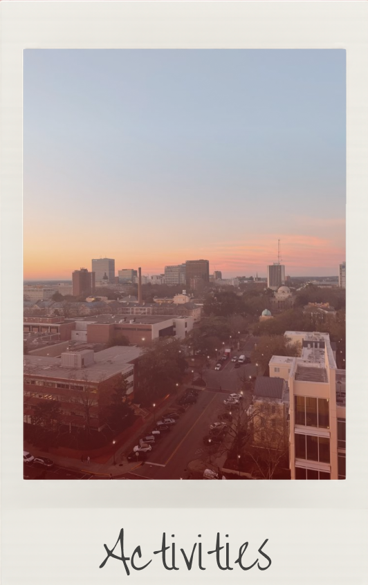
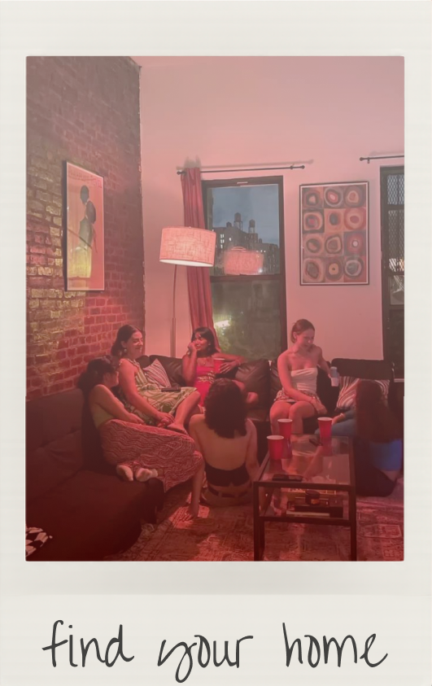
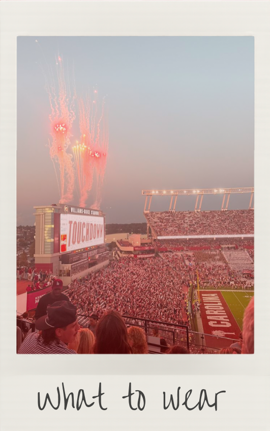

The Ultimate Guide to USC!
Welcome to your guide to life at the University of South Carolina! Whether you're a new student trying to find your way around Columbia or a current Gamecock looking for something new to do, this is your go-to guide for making the most of your time at USC. From the best places to go out and things to do around the city to navigating off-campus living and finding the perfect outfit for gamedays and events, we've got you covered. Explore, have fun, and make the most of your Carolina experience!
Click to Explore!
Click an image to be taken to guides built for gamecocks.

Discover Night Life!
Click on the image to be take to a custom guide fit for gamecocks to explore night life in Columbia!

Find things to do!
Click on the image to discover what you can fill your free time with in and around the city.

Find your Home!
Click on the image to be taken to a guide of apartment options close to campus.

Plan your Outfit!
Click on the image to be taken to a wardrobe guide fit for Gamecocks.
For Gamecocks, by Gamecocks
This guide was created to help students make the most of their time at the University of South Carolina and in Columbia. From finding the right place to live and discovering things to do around the city to figuring out what to wear and where to go on a night out, this site brings together the information students need to experience life beyond the classroom. Whether you’re new to Carolina or just looking for something new to explore, consider this your guide to living, exploring, and making the most of your time as a Gamecock.